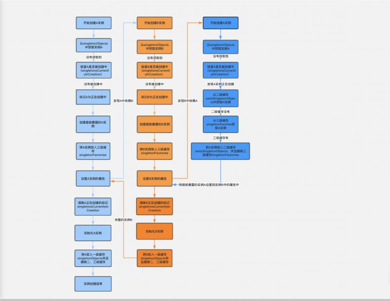
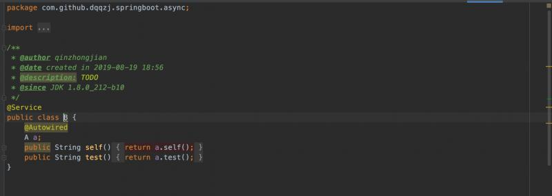
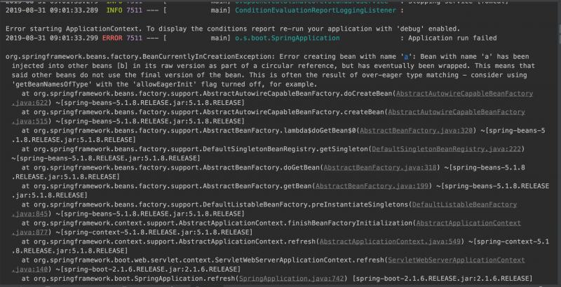
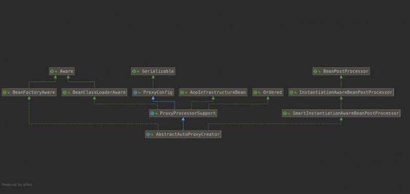
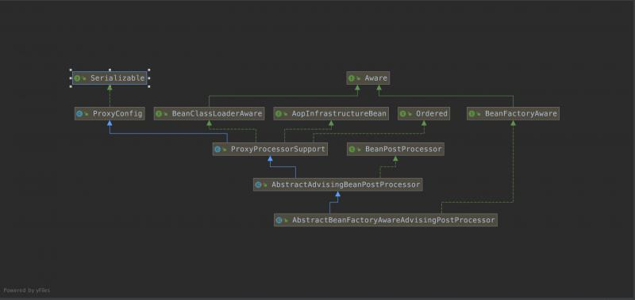

若你是一个有经验的程序员，那你在开发中必然碰到过这种现象：事务不生效。或许刚说到这，有的小伙伴就会大惊失色了。Spring不是解决了循环依赖问题吗，它是怎么又会发生循环依赖的呢？，接下来就让我们一起揭秘Spring循环依赖的最本质原因。



protected Object doCreateBean( ... ){
...
boolean earlySingletonExposure = (mbd.isSingleton() && this.allowCircularReferences && isSingletonCurrentlyInCreation(beanName));
if (earlySingletonExposure) {
addSingletonFactory(beanName, () -> getEarlyBeanReference(beanName, mbd, bean));
}
...
// populateBean这一句特别的关键，它需要给A的属性赋值，所以此处会去实例化B~~
// 而B我们从上可以看到它就是个普通的Bean（并不需要创建代理对象），实例化完成之后，继续给他的属性A赋值，而此时它会去拿到A的早期引用
// 也就在此处在给B的属性a赋值的时候，会执行到上面放进去的Bean A流程中的getEarlyBeanReference()方法 从而拿到A的早期引用~~
// 执行A的getEarlyBeanReference()方法的时候，会执行自动代理创建器，但是由于A没有标注事务，所以最终不会创建代理，so B合格属性引用会是A的**原始对象**
// 需要注意的是：@Async的代理对象不是在getEarlyBeanReference()中创建的，是在postProcessAfterInitialization创建的代理
// 从这我们也可以看出@Async的代理它默认并不支持你去循环引用，因为它并没有把代理对象的早期引用提供出来~~~（注意这点和自动代理创建器的区别~）
// 结论：此处给A的依赖属性字段B赋值为了B的实例(因为B不需要创建代理，所以就是原始对象)
// 而此处实例B里面依赖的A注入的仍旧为Bean A的普通实例对象（注意 是原始对象非代理对象） 注：此时exposedObject也依旧为原始对象
populateBean(beanName, mbd, instanceWrapper);
// 标注有@Async的Bean的代理对象在此处会被生成~~~ 参照类：AsyncAnnotationBeanPostProcessor
// 所以此句执行完成后 exposedObject就会是个代理对象而非原始对象了
exposedObject = initializeBean(beanName, exposedObject, mbd);
...
// 这里是报错的重点~~~
if (earlySingletonExposure) {
// 上面说了A被B循环依赖进去了，所以此时A是被放进了二级缓存的，所以此处earlySingletonReference 是A的原始对象的引用
// （这也就解释了为何我说：如果A没有被循环依赖，是不会报错不会有问题的 因为若没有循环依赖earlySingletonReference =null后面就直接return了）
Object earlySingletonReference = getSingleton(beanName, false);
if (earlySingletonReference != null) {
// 上面分析了exposedObject 是被@Aysnc代理过的对象， 而bean是原始对象 所以此处不相等 走else逻辑
if (exposedObject == bean) {
exposedObject = earlySingletonReference;
}
// allowRawInjectionDespiteWrapping 标注是否允许此Bean的原始类型被注入到其它Bean里面，即使自己最终会被包装（代理）
// 默认是false表示不允许，如果改为true表示允许，就不会报错啦。这是我们后面讲的决方案的其中一个方案~~~
// 另外dependentBeanMap记录着每个Bean它所依赖的Bean的Map~~~~
else if (!this.allowRawInjectionDespiteWrapping && hasDependentBean(beanName)) {
// 我们的Bean A依赖于B，so此处值为["b"]
String[] dependentBeans = getDependentBeans(beanName);
Set<String> actualDependentBeans = new LinkedHashSet<>(dependentBeans.length);
// 对所有的依赖进行一一检查~ 比如此处B就会有问题
// “b”它经过removeSingletonIfCreatedForTypeCheckOnly最终返返回false 因为alreadyCreated里面已经有它了表示B已经完全创建完成了~~~
// 而b都完成了，所以属性a也赋值完成儿聊 但是B里面引用的a和主流程我这个A竟然不相等，那肯定就有问题(说明不是最终的)~~~
// so最终会被加入到actualDependentBeans里面去，表示A真正的依赖~~~
for (String dependentBean : dependentBeans) {
if (!removeSingletonIfCreatedForTypeCheckOnly(dependentBean)) {
actualDependentBeans.add(dependentBean);
}
}
// 若存在这种真正的依赖，那就报错了~~~ 则个异常就是上面看到的异常信息
if (!actualDependentBeans.isEmpty()) {
throw new BeanCurrentlyInCreationException(beanName,
"Bean with name '" + beanName + "' has been injected into other beans [" +
StringUtils.collectionToCommaDelimitedString(actualDependentBeans) +
"] in its raw version as part of a circular reference, but has eventually been " +
"wrapped. This means that said other beans do not use the final version of the " +
"bean. This is often the result of over-eager type matching - consider using " +
"'getBeanNamesOfType' with the 'allowEagerInit' flag turned off, for example.");
}
}
}
}
...
}Object earlySingletonReference = getSingleton(beanName, false);肯定有值addSingletonFactory(beanName, () -> getEarlyBeanReference(beanName, mbd, bean));将给实例对象添加SmartInstantiationAwareBeanPostProcessorAbstractAutoProxyCreator是SmartInstantiationAwareBeanPostProcessor的子类，一定记住了，一定记住，SmartInstantiationAwareBeanPostProcessor的子类很关键！！！！！exposedObject = initializeBean(beanName, exposedObject, mbd);进行BeanPostProcessor后置处理，注意是BeanPostProcessor！！！！！Spring的循环依赖被它的三级缓存给轻易解决了，但是这2个地方的后置处理带来了 循环依赖的问题。
对比AbstractAdvisorAutoProxyCreator和AsyncAnnotationBeanPostProcessor


由于SmartInstantiationAwareBeanPostProcessor的子类会在两处都会执行后置处理，所以前后都会相同的对象引用，不会发生循环依赖问题，异步注解就不行了 ，至于为什么？自己看上面的分析，仔细看哦！
@Lazy注解allowRawInjectionDespiteWrapping设置为true（利用了判断的那条语句）BeanPostProcessor设计到的注解，，哈哈 这不太现实。@Lazy一般含义是懒加载，它只会作用于BeanDefinition.setLazyInit()。而此处给它增加了一个能力：延迟处理（代理处理）
// @since 4.0 出现得挺晚，它支持到了@Lazy 是功能最全的AutowireCandidateResolver
public class ContextAnnotationAutowireCandidateResolver extends QualifierAnnotationAutowireCandidateResolver {
// 这是此类本身唯一做的事，此处精析
// 返回该 lazy proxy 表示延迟初始化，实现过程是查看在 @Autowired 注解处是否使用了 @Lazy = true 注解
@Override
@Nullable
public Object getLazyResolutionProxyIfNecessary(DependencyDescriptor descriptor, @Nullable String beanName) {
// 如果isLazy=true 那就返回一个代理，否则返回null
// 相当于若标注了@Lazy注解，就会返回一个代理（当然@Lazy注解的value值不能是false）
return (isLazy(descriptor) ? buildLazyResolutionProxy(descriptor, beanName) : null);
}
// 这个比较简单，@Lazy注解标注了就行（value属性默认值是true）
// @Lazy支持标注在属性上和方法入参上~~~ 这里都会解析
protected boolean isLazy(DependencyDescriptor descriptor) {
for (Annotation ann : descriptor.getAnnotations()) {
Lazy lazy = AnnotationUtils.getAnnotation(ann, Lazy.class);
if (lazy != null && lazy.value()) {
return true;
}
}
MethodParameter methodParam = descriptor.getMethodParameter();
if (methodParam != null) {
Method method = methodParam.getMethod();
if (method == null || void.class == method.getReturnType()) {
Lazy lazy = AnnotationUtils.getAnnotation(methodParam.getAnnotatedElement(), Lazy.class);
if (lazy != null && lazy.value()) {
return true;
}
}
}
return false;
}
// 核心内容，是本类的灵魂~~~
protected Object buildLazyResolutionProxy(final DependencyDescriptor descriptor, final @Nullable String beanName) {
Assert.state(getBeanFactory() instanceof DefaultListableBeanFactory,
"BeanFactory needs to be a DefaultListableBeanFactory");
// 这里毫不客气的使用了面向实现类编程，使用了DefaultListableBeanFactory.doResolveDependency()方法~~~
final DefaultListableBeanFactory beanFactory = (DefaultListableBeanFactory) getBeanFactory();
//TargetSource 是它实现懒加载的核心原因，在AOP那一章节了重点提到过这个接口，此处不再叙述
// 它有很多的著名实现如HotSwappableTargetSource、SingletonTargetSource、LazyInitTargetSource、
//SimpleBeanTargetSource、ThreadLocalTargetSource、PrototypeTargetSource等等非常多
// 此处因为只需要自己用，所以采用匿名内部类的方式实现~~~ 此处最重要是看getTarget方法，它在被使用的时候（也就是代理对象真正使用的时候执行~~~）
TargetSource ts = new TargetSource() {
@Override
public Class<?> getTargetClass() {
return descriptor.getDependencyType();
}
@Override
public boolean isStatic() {
return false;
}
// getTarget是调用代理方法的时候会调用的，所以执行每个代理方法都会执行此方法，这也是为何doResolveDependency
// 我个人认为它在效率上，是存在一定的问题的~~~所以此处建议尽量少用@Lazy~~~
//不过效率上应该还好，对比http、序列化反序列化处理，简直不值一提 所以还是无所谓 用吧
@Override
public Object getTarget() {
Object target = beanFactory.doResolveDependency(descriptor, beanName, null, null);
if (target == null) {
Class<?> type = getTargetClass();
// 对多值注入的空值的友好处理（不要用null）
if (Map.class == type) {
return Collections.emptyMap();
} else if (List.class == type) {
return Collections.emptyList();
} else if (Set.class == type || Collection.class == type) {
return Collections.emptySet();
}
throw new NoSuchBeanDefinitionException(descriptor.getResolvableType(),
"Optional dependency not present for lazy injection point");
}
return target;
}
@Override
public void releaseTarget(Object target) {
}
};
// 使用ProxyFactory 给ts生成一个代理
// 由此可见最终生成的代理对象的目标对象其实是TargetSource,而TargetSource的目标才是我们业务的对象
ProxyFactory pf = new ProxyFactory();
pf.setTargetSource(ts);
Class<?> dependencyType = descriptor.getDependencyType();
// 如果注入的语句是这么写的private AInterface a; 那这类就是借口 值是true
// 把这个接口类型也得放进去（不然这个代理都不属于这个类型，反射set的时候岂不直接报错了吗？？？？）
if (dependencyType.isInterface()) {
pf.addInterface(dependencyType);
}
return pf.getProxy(beanFactory.getBeanClassLoader());
}
}标注有@Lazy注解完成注入的时候，最终注入只是一个此处临时生成的代理对象，只有在真正执行目标方法的时候才会去容器内拿到真是的bean实例来执行目标方法。
利用allowRawInjectionDespiteWrapping属性来强制改变判断
@Component
public class MyBeanFactoryPostProcessor implements BeanFactoryPostProcessor {
@Override
public void postProcessBeanFactory(ConfigurableListableBeanFactory beanFactory) throws BeansException {
((AbstractAutowireCapableBeanFactory) beanFactory).setAllowRawInjectionDespiteWrapping(true);
}
}这样会导致容器里面的是代理对象，暴露给其他实例的是原始引用，导致不生效了。由于它只对循环依赖内的Bean受影响，所以影响范围并不是全局，因此当找不到更好办法的时候，此种这样也不失是一个不错的方案。